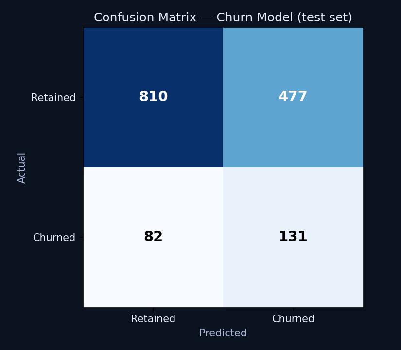
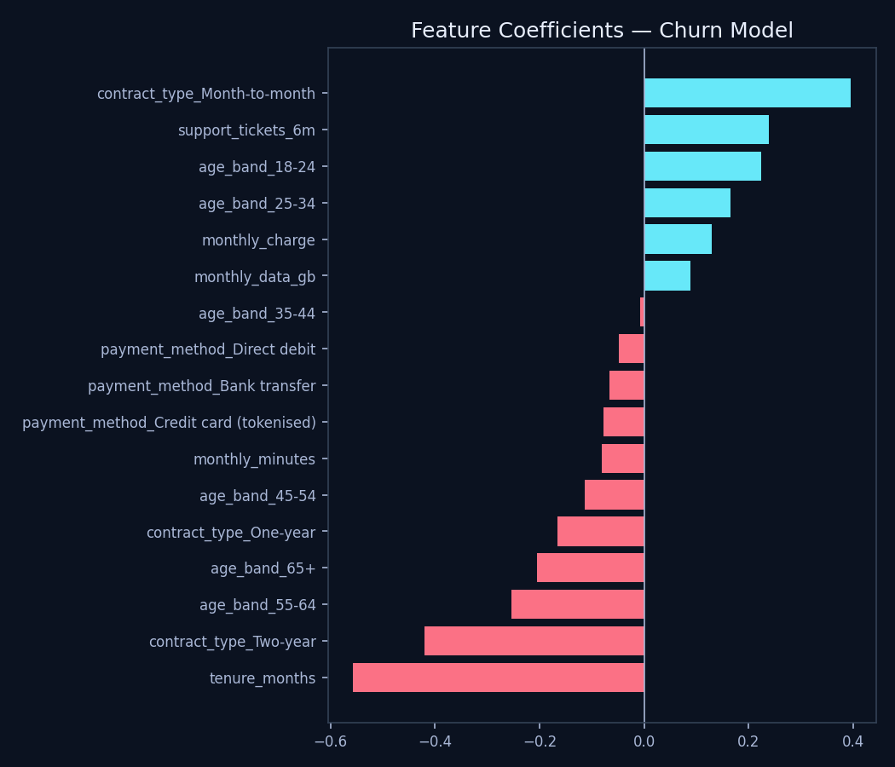

Trainedscikit-learn
Confusion Matrix & Feature Coefficients
Risk: An AI-driven retention model that isn't evaluated on real performance metrics can't be governed responsibly. You can't manage what you haven't measured.
Decision: Train a real baseline model and report accuracy, precision, recall and ROC AUC honestly, including its weaknesses, rather than presenting only favourable numbers.

